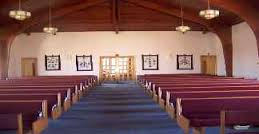

I volunteer for the EMS program at Dutchess Community College. As per a requirement in the course students have to practice what theyve learned in the form of hands on tests called practicals. On the testing days or practice days I go to help. I get assigned one of the various stations for the test and serve as a “victim” for the duration of the test. I also help with the setup and organization of the tests.
Over the summer I volunteer at the Newburgh animal shelter by walking the dogs, and helping with the cats. I would go 1 to 2 times a week and help out. This usually consisted of feeding the animals or just giving them attention.
At my church I volunteer whenever I can. Every summer I help with their week long bible school. I take part in the setup, organization, and then teach one of the various classes. For a few years I was also an acolyte, they help carry out the church services by distributing communion, and collection offering. Right before Thanksgiving we would collect food for families that couldnt afford it and package it to be delivered. We did the same thing with Christmas stockings and Easter baskets during those seasons. I also helped teach weekly Sunday School classes for a while.